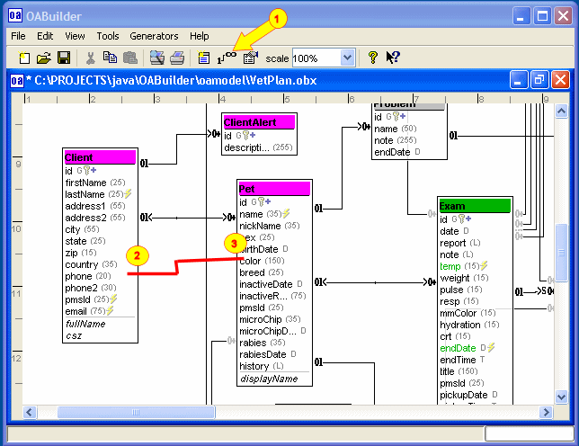

Using the Link command
- Select the Link command button on the toolbar
or select "Create OALink" from the "Edit" menu.
- Click on the first object to line, holding down
the mouse button and dragging to the other object.
- Release mouse button when the second object is selected,
this will create the link.
|